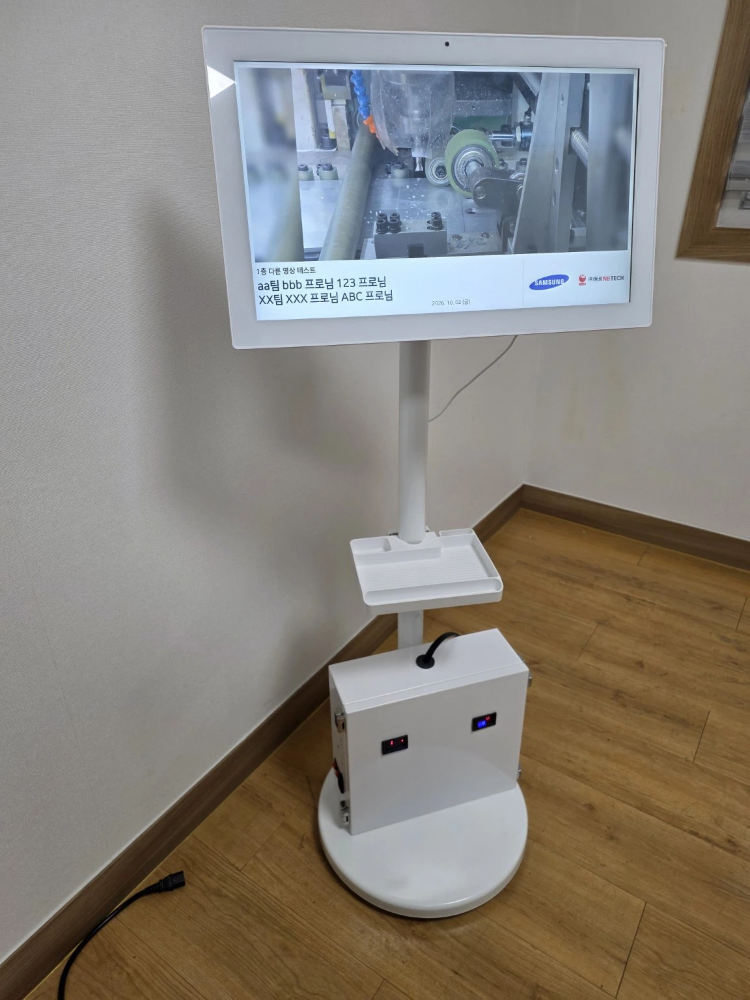
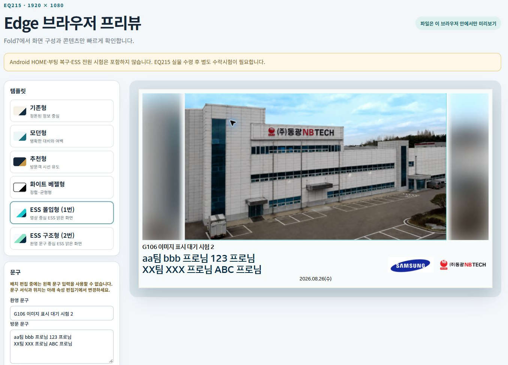
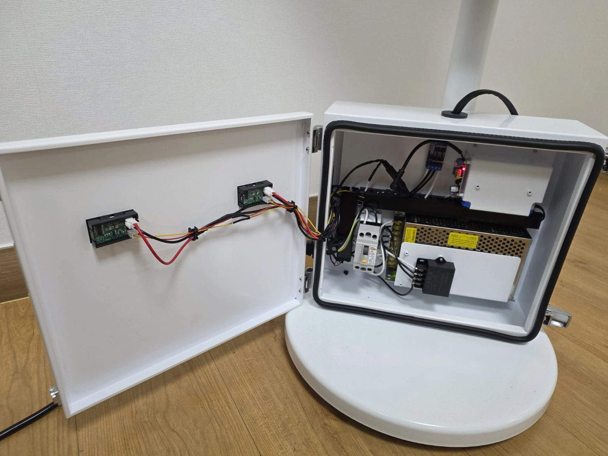

PROJECT 04 / WELCOME DISPLAY
MONITOR-MINI-ESS [EQ215 Welcome Display]
사내 안내 콘텐츠를 PC에서 관리하고 이동형 디스플레이에 이미지·영상을 송출
본인 역할
개발 담당 1명(본인) AI는 구현·디버깅을 지원하는 개발 도구로 활용
2026.10.01 사내 DP 용도 1차 개발완료 RC7 / 1.1.0-rc7 · 전원 리셋 수동 복구 조건
설계 · 구현 근거 보기 ↓

원본 확대 이미지를 불러오지 못했습니다. 원본 확대 링크를 이용해 주세요.01 / PURPOSE & ROLE
목적과 수행 범위
태블릿과 ESS(비상전력공급)시스템을 활용한 고객방문 환대용
WELCOME BOARD 개발
- AI를 활용한 어플리케이션(APK) 1인 기획/개발 완료
- ESS시스템 구성을 위한 구성/배선 구조 기획/구현 완료
- SOLID WORKS를 사용한 3D 모델링 및 2D도면화 작업 완료
- 시중품 구매 및 조립, 테스트 업무 진행
인력 구성
개발 담당 1명(본인) AI는 구현·디버깅을 지원하는 개발 도구로 활용
프로젝트 목적
사내 안내 콘텐츠를 PC에서 관리하고 이동형 디스플레이에 이미지·영상을 송출
주요 업무
시스템 구상 · AI 활용 소프트웨어 자체 개발 기구설계 · 내부 배선 · 조립 및 연동 확인
완료 이력
2026.10.01 사내 DP 용도 1차 개발완료 RC7 / 1.1.0-rc7 · 전원 리셋 수동 복구 조건
개발 환경
Android: Kotlin · Jetpack Compose · Ktor · Media3 관리 방식: 동일 Wi-Fi의 PC 웹브라우저
02 / SOFTWARE
AI를 활용해 관리 화면과 송출 앱을 자체 개발
원본 18페이지PC 웹 관리
문구·템플릿·위치·크기와 이미지/영상·방문업체 로고 편집
Android 송출 앱
태블릿 내 로컬 서버와 네이티브 재생 화면 외부 서버 없이 사내 네트워크에서 동작
PC 웹 관리 ↔ 사내 Wi-Fi ↔ 태블릿 송출
생성형 AI를 개발 도구로 활용
요구사항 정리 → 코드 구현·수정 → 실물 동작 확인


원본 확대 이미지를 불러오지 못했습니다. 원본 확대 링크를 이용해 주세요.03 / MECHANICAL & WIRING
기구설계와 내부 배선 작업
원본 19페이지기구 설계
디스플레이·스탠드·하부 함체의 구성 검토 내부 부품 Lay-out 및 장착 구조 설계
전장·배선
전원·제어 부품 배치와 내부 결선 직접 수행 함체 내부와 도어 계기부의 배선 연결
조립·통합
부품 조립과 배선 정리를 직접 진행 자체 개발한 안내 화면과 실물 시스템 연동


원본 확대 이미지를 불러오지 못했습니다. 원본 확대 링크를 이용해 주세요.04 / RESULT & SCOPE
기구설계 역량을 소프트웨어·전장 통합 개발로 확장
원본 20페이지프로젝트 기획 › 설계·SW 개발 › 배선·조립 › 실물 동작 확인
직접 수행한 결과물
소프트웨어
PC 웹 관리 화면 + Android 안내 송출 앱
기구·전장
스탠드형 실물 구성 + MINI ESS 배선·조립
개인 역할
시스템 구상부터 구현까지 동작 확인을 포함한 전 과정 1인 수행
GitHub 기록으로 확인한 구현 범위
정상 이미지·영상 및 문구·로고 송출
적용 거부 사례에서 정상본 보존·재부팅 복귀
유휴 전원 OFF/ON 3회·영상 2시간 운전 기록
완료 범위: 사내 DP 한정 개발완료 / 전원 리셋 수동 복구.
Wi-Fi 자동 재접속 실패와 일부 시간초과 조건의 미검증은 운영 환경 문제로 종료.